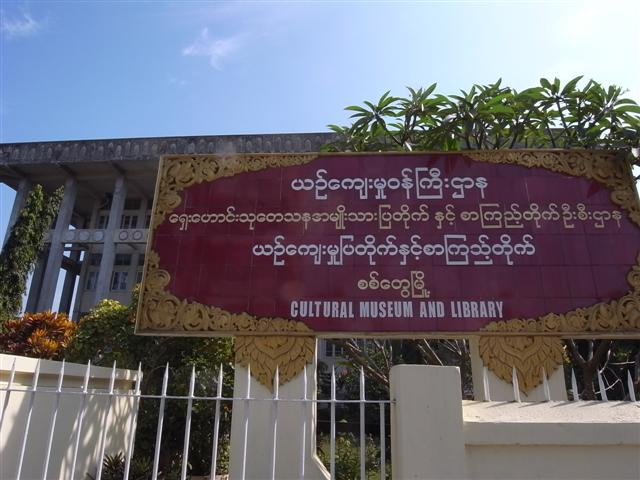
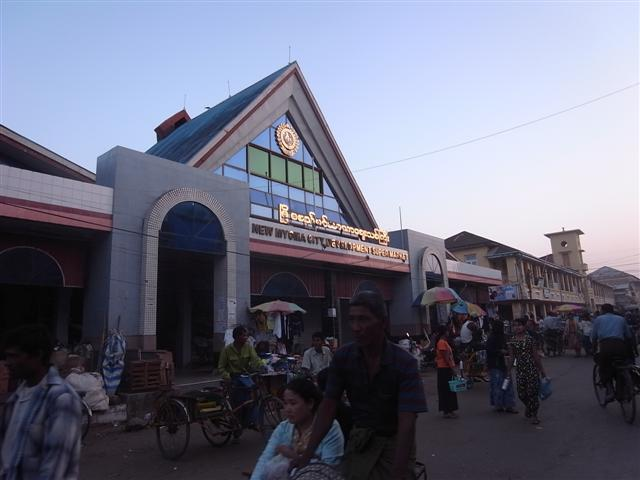

五時多我離開 Golen Star Guest House 了，行去 Waddy Htut Guest House 途中經過一間木屋，屋內有微弱的燈光，裏面不斷傳出頌經聲，若這裏不是緬甸，我會覺得這像電影中神秘教團在做什麼祭典。
Jim 和 Lin 已在旅館門前等上車，他們的行李真是大和重到不行，究竟他們如何搬來的？到達碼頭後一些人幫他們把行李運到船上，但原來要收錢的，又爭論了一番。
前一晚和 Bert 傾談說到他很不喜歡坐快船因為不能出外，室內又冷，開著電視大聲播放。來到船艙環境和他形容的一樣，還要座位不是很闊，感覺不太好。說起來緬甸的電視全都是 LCDTV，船內的還要很大部。
早上外面很冷，冷風由窗的破口吹入。這三小時都幾無聊，電視播的東西我沒興趣看，也覺得很吵耳，唯有看書和雜誌，Jim 給了我他看完的 TIME、Forbes 和 The Economist，看完我覺得 The Economst 好看過 TIME。說起 The Economist，旅遊書說緬甸禁止這類雜誌，叫遊客帶些過去，但其實現在緬甸的大城市如 Yangon 直頭有得賣。
到岸後，乘車到他們預訂好的旅館 New Palace Hotel，在附近的航空公司辦公室確認機位，然後行去我住的 Mya Guest House。很開心地我住的是 bungalow，很大間。Mya Guest House 的環境很好，屋外的空間很大，又有花園。我們在餐廳飲咖啡傾計，約好明早一起乘車到機場，然後他們回去休息。
Sittwe 市中心主要有一條車路貫通南北，兩旁的是商店、網吧，很多的橫街，Mya Guest House 旁邊有一所大學，但已經荒廢，成為人們的休憩公園，校園中有一棵大樹，樹上有很多蝙蝠，不過這些蝙蝠是吃水果的，日間也活動。
沿著車路由南向北行，經過 Bangladesh Consulate，這區沿岸是很多細小的木屋，屋外海岸泥沙地置著很多的漁船。有個人向我打招呼，他帶我去他的家，看他的家人，我在他家的露台，隔著鐵絲網觀看外面的海灘，一陣陣的魚腥味吹來，他請我喝茶，指著出面的船，只說了一個「work」字。
這一帶和 Sittwe 其他地方不同，人口多但空間小，生活環境不好。我遇上的這位朋友的名字叫 Maw Min，懂很少英語，是穆斯林。離開他的家，他和他兩位朋友 Jabo 和 Arjo 帶我到另一個地方，好像是餐廳的地方。
他們又煙又酒，我取笑 Maw Min 是個喝酒的穆斯林。他懶洋洋地指著另一個人說 Buddhist，然後再指著另一個說 Christian，再指著自己說 Muslim，「No Problem」。
其中一位朋友神經兮兮，我在紙上寫他們的名字，他不斷向我重覆他的名字要我寫。我想把照片寄給他們，但我問了很多次他們也說不出地址來，我勉強把一堆英文字母砌成一個個讀音，重覆讀出確認，真不知能否寄得到。
離開繼續向北走，到達 Maka Kuthala Kyaungdawgyi。看見門前一堆運動鞋，裏面一定來了一班遊客。這裏的藏品主要放在二樓，果然有一班西方人，是前晚在 Moe Cherry 的同一班，他們的導遊講解完，整班人離開，剩下我一個遊客，以及一位僧人，僧人能說良好英語，我們聊天。原來他是這裏的主人。
他帶我到樓下一間房，房內有些女孩子，是盲的，僧人說這裏有間盲人學校，而這班女孩剛剛從遠處坐車到達，所以很累，明天晚上她們會在城內表演。其中一位好像剛梳洗完畢，僧人帶我埋去介紹，我們握手，用英語談話，她笑容燦爛，僧人說她的名字是河的意思。
然後我們到後院，是一所盲人學校。那裏的老師本身視力也有問題，向我示範如何用一個刻凸字的盤來寫字，又送我一包他們造的香，這香的香味很大，之後放在背囊每次打開都聞到。
離開後我回去旅館附近，行到魚市場，已經日落，市場攤檔很多都關門了，沿著海岸行，海邊的陽光漸漸地暗淡。原本今晚打算吃得好一點，但偏偏 Kyat 不足，這裏不收美元，結果仍然省檢。
Sittwe
Mya Guest House
電腦課
打網球



Maka Kuthala


Rice Market

Fish Market